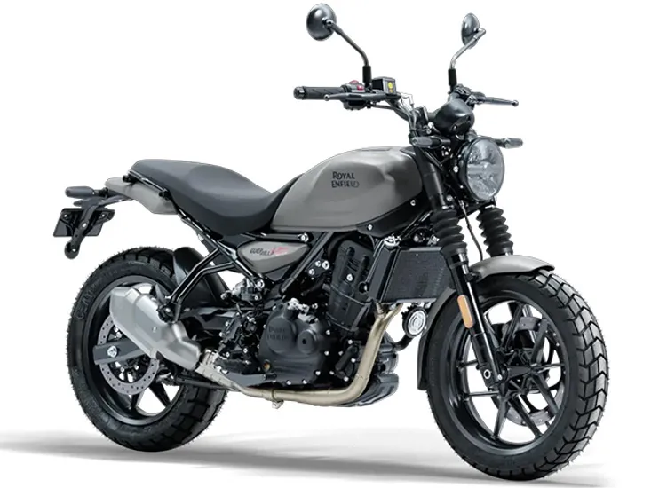

The Royal Enfield Guerrilla 450 is a purpose-driven motorcycle that combines aggressive styling with good
performance. It features a muscular fuel tank, sharp bodywork, and a rugged frame built to take a beating.
Powered by a 450cc liquid-cooled single-cylinder engine, it offers great performance with adequate power
delivery, matched with a six-speed gearbox. Designed for versatility, the Guerrilla 450 comes equipped with
long-travel suspension, dual-channel ABS, and a minimalist instrument cluster, making it suitable for both
city rides and off-road expeditions.